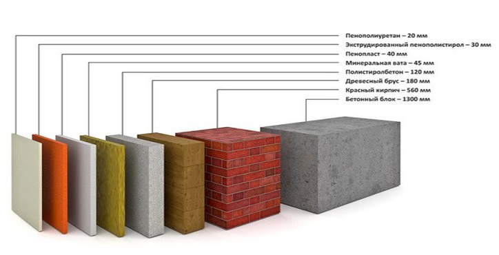
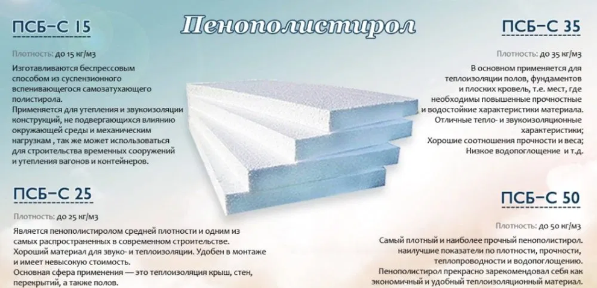

<!DOCTYPE html>
<html  lang="en"></html>  
<head>
    <meta charset="UTF-8">
    <meta http-equiv="X-UA-Compatible" content="IE=edge">
    <meta name="термопанели" content="термопанели, initial-scale=1.0" content="Купить фасадный декор , initial-scale=1.0"">
    <title>Master decore</title>
    <link rel="stylesheet" href="style4.css">
</head>
<body>
    <header class="g">
        <div class="logo">
            
        </div>

        <span class="kesednsoled"></span>
      
        <div class="ico-wrap">
        <i class="fa fa-phone ico-contact"></i>
        </div>
        <div class="meanous-andscoev">
        <h4 class="aio-icon-title">Связь по телефону:</h4>
        <div class="aio-icon-description">
        +7 701 781 0786
        <br>+7 701 100 2210</div>
        </div>

        <span class="kesednsoled"></span>

        <div class="ico-wrap"> <i class="fa fa-map-marker ico-contact"></i>
        </div>
        <div class="meanous-andscoev">
        <h4 class="aio-icon-title">Юридический адрес:</h4>
        <div class="aio-icon-description">
        <a href="https://2gis.kz/almaty/geo/9430047407011979/76.948558%2C43.365514?m=76.949096%2C43.364862%2F16.95">г.Алматы, Жетысуский район,<br> улица Аксуат, 110/1</a></div>
        </div>

        <span class="kesednsoled"></span>
      
        <div class="ico-wrap"> <i class="fa fa-instagram-o ico-instagram"></i>
        </div>
        <div class="meanous-andscoev">
        <h4 class="aio-icon-title">Инстаграм:</h4>
        <div class="aio-icon-description">
        <a href="https://www.instagram.com/master_decor_almaty/">MASTER DECOR<br>ALMATY</a>
        </div>
        </div>

    </div>

</header>
    <header class="headerf">
        <a href="" class="logop"></a>
        <ui class="navigation">
            <li><a href="home.html">Главная</a></li>
            <li><a href="termopanele.html">Каталог</a></li>
            <li><a href="work.html">Наши работы</a></li>ы
            <li><a href="abauts.html">О материале</a></li>
            <li><a href="phone.html">Контакты</a></li>
        </ui>
    </header>
    
    <main>
        <div class="ypp">
            <h2 class="title">Утеплитель пенополистирол  - пенопласт</h2>
            <p>Пенопласт (Пенополистирол) — материал белого цвета на 98% состоящий из воздуха, заключённого в миллиарды микроскопических тонкостенных пузырьков из вспененного полистирола. Пенопласт устойчив к воздействию воды и мороза, медленно стареет, не подвержен воздействию микроорганизмов, практически не трещит в местах соединения в отличии от полиуретана.</p> 
            <li>легкость;</li>
            <li>прочность;</li>
            <li>устойчивость к высоким и низким температурам;</li>
            <li>упругость;</li>
            <li>паропроницаемость;</li>
            <li>водонепроницаемость;</li>
            <li>негорючесть;</li>
            <li>долговечность;</li>
            <li>биологическая устойчивость;</li>
            <li>простота и легкость обработки.</li>
        </div> 
        <div class="ypp2">
            <h2 class="title">Структура фасадной термопанели и декоративных элементов</h2>
            <p class="img"></p>
        </div>
        <div class="ypp3">
            <h2 class="title">Плотность материала</h2>
            <p>Плотность — важная характеристика пенопласта, которая влияет на прочность, водонепроницаемость, теплопроводность. Она зависит от отношения веса к объему. Более плотные и тяжелые плиты выбирают для поверхностей, где важна механическая стойкость и гидрофобность. Тесное примыкание ячеек друг к другу негативно сказывается на теплоизоляционных свойствах, в структуре остается меньше воздуха. Для эффективного утепления стоит выбирать легкие и пористые виды пенопласта.</p>
            <p id="fgh">Плотность материала отражается в маркировке:</p>
            <li>ПСБ-С 15 — материал с минимальной плотностью, им можно утеплять поверхности без нагрузок;</li>
            <li>ПСБ-С 25 — оптимальный вариант для стен изнутри помещения;</li>
            <li>ПСБ-С 50 — утеплитель с максимальной плотностью, можно использовать в составе пола.</li>
            <li>ПСБ-С 35 — универсальный пенопласт для утепления внутренней и наружной стороны стен, потолка и пола;</li>
            <p>Материал марок ПСБ 15 и ПСБ 25 можно применять для утепления только при наличии опорного каркаса. Он не способен выдержать вес штукатурки.</p>
            <p class="img2"></p>
        </div>
    </main>
    <footer>
        
    </footer>
</body>
</html>